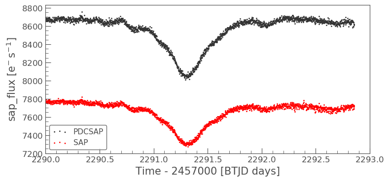

Understanding Crowding in TESS data
Welcome everyone to our TESS Lightkurve splinter session!

Download the notebook
If you would like to download a copy of this notebook you can do so by clicking the link below
Learning goals
In this tutorial, we will teach the user about crowding in the TESS data products and how to correct for it.
The splinter session assumes a basic knowledge of python and astronomy, and will walk the user through several of the concepts outlined below:
- Downloading and comparing LightCurve Object data
- Examining a TargetPixel File (TPF) for crowding
- Creating a light curve from a TPF
- Removing the effects of scattered light and noise
- Removing the effects of crowding
This tutorial is designed for users that have previous experience with Lightkurve.
Imports
This tutorial requires the use of specific packages: - Lightkurve to work with TESS data (v2.0.1) - Matplotlib for plotting. - Numpy for manipulating the data.
First time users
If you are not that experienced with Python, or cannot download Lightkurve, you can run this notebook as a Colab notebook. Colaboratory allows users to write and execute Python in your browser with zero configuration required.
All you need is a Google account and to copy and paste in the following command at the top of your colab notebook:
!pip install git+https://github.com/lightkurve/lightkurve.git --quiet
This downloads the Lightkurve package.
import numpy as np import lightkurve as lk import matplotlib.pyplot as plt from lightkurve.correctors import RegressionCorrector, DesignMatrix from lightkurve.correctors import PLDCorrector import warnings
Introduction into crowding
TESS photometry, while high-cadence and of high quality, does suffer from crowding issues. A single TESS pixel corresponds to 21 arcseconds (~0.35 arc min) on sky and the TESS Pixel Response Function (PRF) is very large compared to the pixel. A target of interest may therefore be contaminated by any number of neighboring objects, and it is important that the light from these other objects be accounted for and removed.
For exoplanets, if this excess flux is not removed, it can cause a decrease in the apparent planet transit depth and lead to a systematic underestimation of the planet radii.
LightCurve Objects have been corrected for this crowding via the data processing pipeline developed by the Science Processing Operations Center (SPOC). A description of this correction and its application is provided in Section 2.3.11 of this paper. The correction however is applied only to the PDCSAP flux and not the SAP flux.
The crowding correction applied focuses on two parameters: - The crowding metric: This reflects what fraction of the flux in the aperture is due to the target itself, not the nearby light sources. - The flux fraction: Similar to excess flux leaking into the aperture, a fraction of the PRF of the target may not be captured in it. To account for this missing fraction, the flux fraction is computed.
If PDCSAP flux is not available, the user may apply the corrections outlined below to remove not only the instrumental noise, but any additional crowding effect.
1. Downloading and comparing LightCurve Object data
In this tutorial we will be examining at the binary star system WR21a. Let’s first see if there are any LightCurve objects avalible for download.
search_lk = lk.search_lightcurve("WR21a") search_lkSearchResult containing 4 data products.
| # | mission | year | author | exptime | target_name | distance |
|---|---|---|---|---|---|---|
| s | arcsec | |||||
| 0 | TESS Sector 09 | 2019 | QLP | 1800 | 464570167 | 0.0 |
| 1 | TESS Sector 10 | 2019 | QLP | 1800 | 464570167 | 0.0 |
| 2 | TESS Sector 36 | 2021 | SPOC | 120 | 464570167 | 0.0 |
| 3 | TESS Sector 37 | 2021 | SPOC | 120 | 464570167 | 0.0 |
OK, great! There are data for multiple sectors. For this tutorial, we will examining data from Sector 36 which is provided by the SPOC. We can download this via the following functions,
lc36 = search_lk[2].download() lc36.plot()
<matplotlib.axes._subplots.AxesSubplot at 0x7fc6e008eed0>
This very clearly shows the transit of the system. The flux displayed is the PDCSAP flux which has been fully corrected. Let’s see what the SAP flux looks like in comparison. We can do this by specifying the column in the plot function.
ax = lc36.scatter(normalize=False, label='PDCSAP') lc36.scatter(ax=ax, column='sap_flux', normalize=False, color='red', label='SAP') plt.xlim(xmin=2290, xmax=2293)
(2290, 2293)
The above plot clearly indicates the significant difference in amplitude between the PDCSAP and SAP flux. The plot illustrates how much of a difference the flux fraction and crowding metric can change the absolute magnitudes of the light curves.
Now we plot the normalized PDCSAP and SAP flux to show that the transit depth has changed.
ax = lc36.scatter(normalize=True, label='PDCSAP') lc36.scatter(ax=ax, column='sap_flux', normalize=True, color='red', label='SAP') plt.xlim(xmin=2290, xmax=2293)
(2290, 2293)
The transit depth of the SAP flux is not the same as the PDCSAP. This difference is a good indication that the data suffers from crowding.
2. Examining a Target Pixel File for crowding
To fully appreciate how crowded our object is, we can examine its surroundings via downloading and plotting the associated TargetPixel File (TPF).
tpf = lk.search_targetpixelfile('WR21a', sector=36).download(quality_bitmask='hard')
Note for this tutorial we are specifing the quality_bitmask to be hard. This is to ensure that only good quality data is downloaded. We can now plot our TPF and display the aperture mask that has been defined by the SPOC for our object of interest.
tpf.plot(aperture_mask=tpf.pipeline_mask)
<matplotlib.axes._subplots.AxesSubplot at 0x7fc702669590>
The above plot indicates that we are focusing on the right object, but that it is indeed crowded by a much brighter star and as such, we need to remove the contaminating flux.
3. Creating a light curve from a TPF
To do this, we must first create the light curve of the object using the default mask, as shown below.
tpf_lc = tpf.to_lightcurve(aperture_mask=tpf.pipeline_mask) tpf_lc.plot()
<matplotlib.axes._subplots.AxesSubplot at 0x7fc730838450>
A quick glance at this light curve indicates that there are also long term trends/noise that need to be removed before we can correct for crowding.
4. Removing the effects of scattered light and noise
As indicated above, the SAP light curve is effected by scattered light and noise. We must remove this before correcting for crowding. To do this, we can used one of Lighkurves built in corrector functions, in this case Pixel Level Decorrelation (PLD).
The inputs required are the TPF, the aperture, and the number of principal componants.
pld = PLDCorrector(tpf, aperture_mask=tpf.pipeline_mask) pld.correct(pca_components=5) pltAxis = pld.diagnose() pltAxis[0].set_ylim(ymin=6000, ymax=8000) pltAxis[1].set_ylim(ymin=6000, ymax=8000) pltAxis[2].set_ylim(ymin=6000, ymax=8000) pld.diagnose_masks(); pld_lc = pld.correct(pca_components=5, aperture_mask=tpf.pipeline_mask)

Lets compare this corrected light curve with our previous light curves.
ax = lc36.scatter(normalize=True, label='PDCSAP') tpf_lc.scatter(ax=ax, normalize=True, color='red', label='SAP ORIGINAL') pld_lc.scatter(ax=ax, normalize=True, color='green', label='PLD SAP') plt.xlim(xmin=2290, xmax=2293)
(2290, 2293)
The depth of the PLD SAP light curve still does not match that of the PDCSAP, but there is some improvement in the light curve overall. Let’s now apply the crowding correction to the pld_lc.
5. Removing the effects of crowding
To do this, we must first pull out the two parameters we need to calculate the correction - CROWDSAP and FLFRCSAP
CROWDSAP = tpf.hdu[1].header['CROWDSAP']
CROWDSAP
0.78926158
FLFRCSAP = tpf.hdu[1].header['FLFRCSAP']
FLFRCSAP
0.7079128
From the above values, we see that the aperture contains only 71% of the object’s flux, and an extra 21% of the flux in the aperture is due to other objects.
To correct for the crowding and missing flux, we must first calculate the median flux of our time series. Note that we want only data that is of a high quality, which is why we originally set our quality_mask as hard.
median_flux = np.median(pld_lc.flux.value)
The excess flux in the aperture is then calculated as (1-CROWDSAP) times the median flux
excess_flux = (1-CROWDSAP)*median_flux
This excess flux must then be subtracted from the time series data
flux_removed = pld_lc.flux.value - excess_flux
This residual flux, however, does not account for the flux of our object outside of the aperture, as such there is one more correction to apply - FLFRCSA.
flux_corr = flux_removed/FLFRCSAP
The uncertainties on this flux are also now altered to be
flux_err_corr = pld_lc.flux_err.value/FLFRCSAP
We can now convert this into a LightCurve Object again via the following
lc_corr = lk.LightCurve(time=tpf.time.value, flux=flux_corr, flux_err=flux_err_corr)
Let’s plot and compare to our previous light curves.
ax = lc36.scatter(normalize=True, label='PDCSAP') tpf_lc.scatter(ax=ax, normalize=True, color='red', label='SAP ORIGINAL', alpha=0.5) pld_lc.scatter(ax=ax, normalize=True, color='green', label='PLD SAP', alpha=0.5) lc_corr.scatter(ax=ax, normalize=True, color='blue', label='PLD SAP CORR', alpha=0.5) plt.xlim(xmin=2290, xmax=2293)
(2290, 2293)
np.nanmedian(lc_corr.flux.value)
8574.747152437736
The corrected light curve is now significantly closer to that of the PLDSAP light curve. There are still some minor descrpancies, but these are are realated primarily to the removal of noise. Adjustments in the noise removal procedure applied to the SAP light curve can further improve this reduction.
Let’s try another method - the CBV corrector.
CBVCorrector
from lightkurve.correctors import CBVCorrector cbvCorrector = CBVCorrector(tpf_lc) cbvCorrector.cbvs
[TESS CBVs, Sector.Camera.CCD : 36.3.1, CBVType : SingleScale, nCBVS : 16, TESS CBVs, Sector.Camera.CCD : 36.3.1, CBVType.Band: MultiScale.1, nCBVs : 8, TESS CBVs, Sector.Camera.CCD : 36.3.1, CBVType.Band: MultiScale.2, nCBVs : 8, TESS CBVs, Sector.Camera.CCD : 36.3.1, CBVType.Band: MultiScale.3, nCBVs : 8, TESS CBVs, Sector.Camera.CCD : 36.3.1, CBVType : Spike, nCBVS : 6]
# Select which CBVs to use in the correction cbv_type = ['SingleScale', 'Spike'] cbv_indices = [np.arange(1,9), 'ALL'] # Perform the correction cbvCorrector.correct_gaussian_prior(cbv_type=cbv_type, cbv_indices=cbv_indices, alpha=1e-4) cbvCorrector.diagnose();
Let’s check to see if we have over or underfit the data.
with warnings.catch_warnings(): # ignore "RuntimeWarning" warnings.simplefilter("ignore", RuntimeWarning) cbvCorrector.goodness_metric_scan_plot(cbv_type=cbv_type, cbv_indices=cbv_indices);
We might be slightly overfitting, so let’s adjust our alpha.
cbvCorrector.correct_gaussian_prior(cbv_type=cbv_type, cbv_indices=cbv_indices, alpha=1e-1) cbvCorrector.diagnose();
Now we can apply the crowding corrections.
# Perform the FF and CM corrections median_flux = np.median(cbvCorrector.corrected_lc.flux.value) excess_flux = (1-CROWDSAP)*median_flux flux_removed = cbvCorrector.corrected_lc.flux.value - excess_flux flux_corr = flux_removed/FLFRCSAP flux_err_corr = cbvCorrector.corrected_lc.flux_err.value/FLFRCSAP lc_cbv_corr = lk.LightCurve(time=tpf.time.value, flux=flux_corr, flux_err=flux_err_corr)
We can now compare to the PDCSAP and SAP light curves.
ax = tpf_lc.scatter(normalize=True, color='red', label='SAP ORIGINAL') lc36.scatter(ax=ax, normalize=True, label='PDCSAP') lc_cbv_corr.scatter(ax=ax, normalize=True, color='cyan', label='CBV Corrected', alpha=0.5) plt.xlim(xmin=2290, xmax=2293);
Finally, we can compare our PLD and CBV corrected light curves.
ax = lc36.scatter(normalize=True, label='PDCSAP') lc_cbv_corr.scatter(ax=ax, normalize=True, color='cyan', label='CBV Corrected') lc_corr.scatter(ax=ax, normalize=True, color='blue', label='PLD SAP CORR', alpha = 0.5) plt.title('Comparing PLD correction to CBV Correction') plt.xlim(xmin=2290, xmax=2293);
The CBV light curve might be a better match to the PDCSAP.